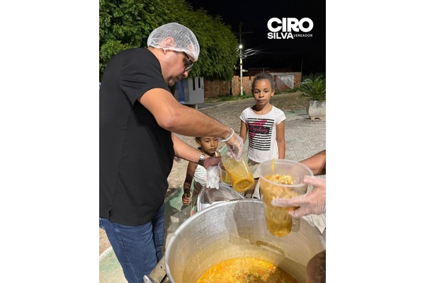

Meu compromisso é estar sempre ao lado do povo de Araci, ouvindo de perto as demandas da nossa gente e trabalhando todos os dias para transformar essas necessidades em ações concretas.
Acredito que a verdadeira política se faz com presença, diálogo e responsabilidade. Por isso, mantenho meu mandato aberto à população, visitando comunidades, conversando com os moradores e buscando soluções que realmente façam a diferença na vida das pessoas.
Meu propósito é lutar por uma cidade cada vez melhor, com mais oportunidades, dignidade e qualidade de vida para todos.

Ação feita com carinho para ajudar quem mais precisa em Araci. Mais que alimento, é presença, escuta e cuidado com as pessoas. Cada edição reforça o compromisso de estar perto da comunidade. Seguimos firmes, porque cuidar das pessoas é a nossa missão.